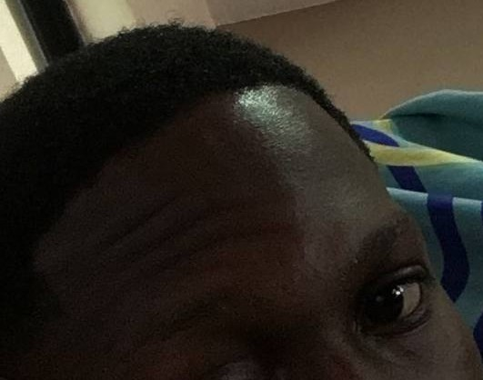

OLUWABAMISE OLUWANIFEMI

Intern
Objectives

A proactive 300 level, BSc Computer Science student, with strong Academic standing.
Currently studying at Covenant University Ogun State.
Possess strong leadership and communication skills, with Fluency in English.
Keen to pursue a career in Software Development and programming.
Seeking to leverage my familiarity with programming and algorithms as well as basic editing and content creating skills.
Bio
 f.3.m.1
f.3.m.1
Twitter
.png)
Phone Number
.gif) 08070951487
08070951487

skills

| Skill Type | Skills | Proficiency |
|---|---|---|
| Tecnical skills | programming and coding: JAVA, Python, HTML, and css. | Intermediate |
| Video Editing:Blender and Adobe Premier Pro | Intermediate | |
| Computer Hardware:modern hardware and Desktop PC building and repair | Intermediate | |
| Communication Skills | writen and Oral communication: English | Advanced |
| Other Skills | Content Creation, Social media Management. | Intermediate |
Education
Covenant University |
Ota| Bachelor of Science | Ogun state, Nigeria|2021-Present | ADDITIONAL COURSES
DLD(Foundations of Leadership and Development) |
|---|---|---|
|
Kith and Kin International College,Ikorodu.
Finished top 5 2020 Graduating set. |
Lagos State, Nigeria| 2015-2020 |

Address

16,T.0.S Benson Road, Ebute, Ikorodu,Lagos State.